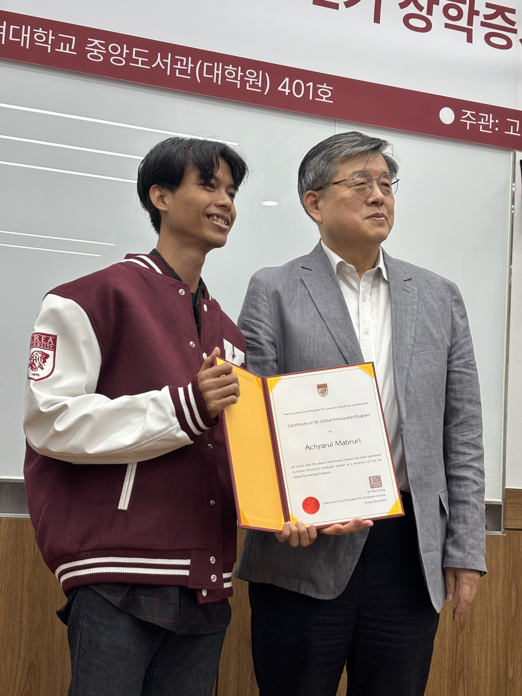

From a village in Indonesia to a semiconductor lab in Seoul
Engineering physicist turned memory-device researcher, scholarship kid turned mentor. Here is the path so far.
Click through the timeline
Every stop was made possible by a scholarship or fellowship. Select a stop to read more.

Memory chips in Seoul
With the SK Global Scholarship I joined Prof. Tae Geun Kim's Advanced Semiconductor Laboratory, where I work on RRAM and phase-change memory for neuromorphic computing.
Korea University, Seoul
SK Global Scholarship (full). Advanced Semiconductor Laboratory, Prof. Tae Geun Kim. Coursework includes Advanced Semiconductor Devices, Electronic Materials and Devices, and Understanding Deep Learning.
Delhi Technological University, India
First Division with Distinction. ICCR Scholarship (full). Thesis: “Temperature Dependence of Complete Photonic Band Gap in 2D Photonic Crystal Structures.”
Research experience
Graduate Researcher
- Fabricate and characterise lead-free metal-halide RRAM devices by sputtering and Keithley 4200-SCS I–V and pulse measurements.
- Work with the lab's PRAM team on device-to-system simulation of phase-change heterostructure memories.
- Build compact models, crossbar simulations and hardware-aware neural networks; see the research projects.
Research Fellow, InteRussia Engineering Fellowship
- Selected for the programme on Modern Quantum and Information Technologies in Electronics and Photonics.
- Joined expert-led trainings and workshops on quantum materials, photonic device design and computational modelling.
- Built a scientific project with an international cohort, combining Python simulations, basic quantum-mechanics simulation and emerging photonic systems.
Researcher, Advanced Simulation Lab
- Researched complete photonic band gaps, structural design and optical properties of photonic crystals.
- Designed silicon and GaAs photonic crystal structures for sensing and studied their temperature dependence.
- Simulated wave propagation and band structures with MPB and MEEP; results published in the Journal of Modern Optics.
Research Intern, Silicon Photonics Research Group
- Investigated carrier mobility in Group-IV Si₁₋ₓSnₓ alloys for next-generation semiconductors.
- Simulated the indirect-to-direct band-gap crossover and modelled band-structure changes in MATLAB.
- Evaluated how tin incorporation changes electronic and optical properties for silicon photonics.
Skills
Lab & devices
Simulation & modelling
AI & data
Soft skills & communication
Leadership & youth development
Languages
Courses and certifications
QSilver35: Quantum Computing & Programming
QWorld workshop: complex numbers, DFT and QFT, phase estimation, order finding and Shor's algorithm.
Quantum Machine Learning
Hasso Plattner Institute: classical and quantum ML models in Python and Qiskit, their roadblocks and future prospects.
Molecules and Materials for the Energy of Tomorrow
Université Paris-Saclay: renewable-energy technologies, the energy transition, and energy production, storage and distribution.
Introduction to Quantum Computing with Qiskit
Hasso Plattner Institute: IBM Quantum services, first circuits, Deutsch–Jozsa and Grover's algorithms, measurement-error mitigation.
Let's build something together.
Open to research collaborations, opportunities and conversations about memory devices, AI hardware, youth development, or scholarships and studying abroad.